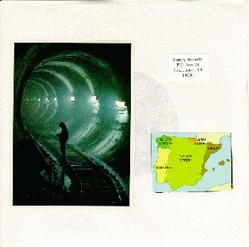
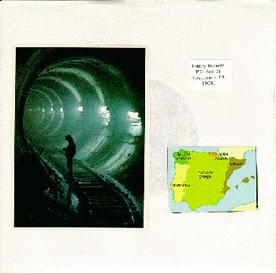

the wheel method
 

title: the wheel method: a pottery records compilation
format: 7"
side 1:
mean spirit'd robots - honkey dancer
the mountain goats - song for an old friend
side 2:
ramon speed - i withdraw these strings from you
laundromat - abu loves you
u.s. saucer - shake smear laugh and roll
please mail any questions/comments/complaints, or just notes hello to:nall@themountaingoats.net